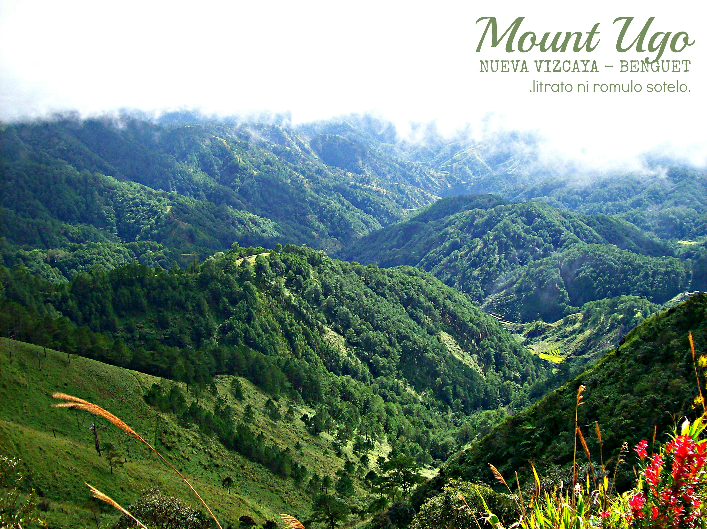

HOME
About Us
Destinations
Contact Us

Mt. Ugo
located in Kayapa, Nueva Vizcaya
Mt. Ugo (sometimes Ugu)
is a major destination in the Cordilleras. Although its elevation is low compared to the lofty heights of Mt. Pulag and Mt. Napulauan, it has stately pine forests and spectacular views similar to its higher counterparts. Also, the traverse connecting N. Vizcaya and Benguet is a challenging trail that serves as the southeast entrance to the Cordillera mountain chain – opening possibilities such as a traverse to Mt. Pulag.
This mountain was “discovered” in the aftermath of a PAL aircraft crash on June 26, 1987. Flight PR206, a Hawker Siddeley HS-748, bound for Baguio, crashed in the slopes of Mt. Ugo while attempting to land in a monsoon, killing all 50 people onboard. Rescuers, including mountaineers, found the wreckage five hours after the crash, 200 yards below the summit. Subsequent operations paved the way for trails, and soon, word spread about a new hiking destination. Today, hundreds of climbers climb Mt. Ugu yearly; there is an established guide system, and the mountain is one of the more popular hikes in the Cordilleras, together with Mt. Pulag, Mt. Amuyao, and Mt. Napulauan.